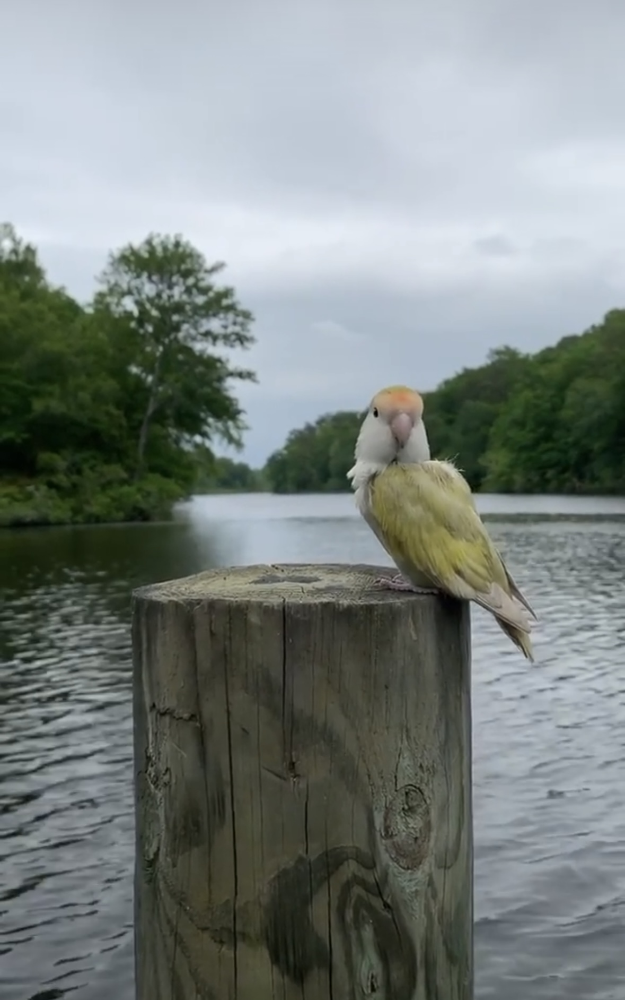

Chory is the best
Lovebird is the common name for the genus Agapornis, a small group of parrots in the Old World parrot family Psittaculidae. Of the nine species in the genus, all are native to the African continent, with the grey-headed lovebird being native to the African island of Madagascar.